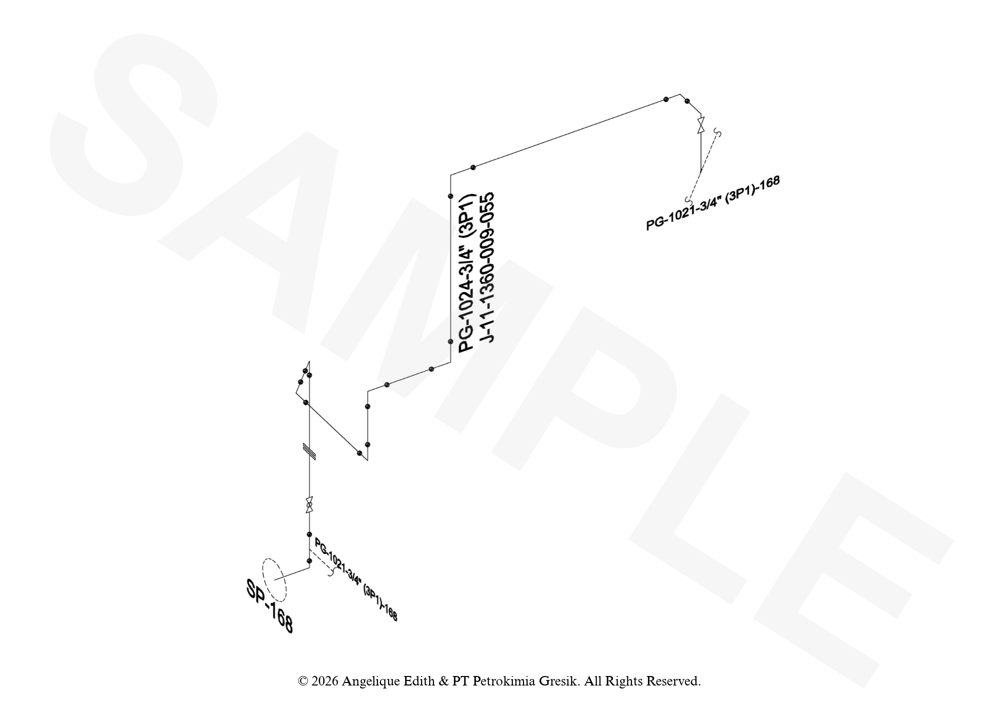

Piping Isometric Digitization
Digitization of isometric piping drawings for improved visualization and analysis.

Project details
Overview
Design and production of a VTOL drone that switches between quadcopter and fixed-wing modes. Take-off and landing are handled vertically to broaden their location possibilities, once airborne it transitions to plane mode for a more efficient cruise, higher speeds and extended range. First flight was successfully completed in February 2026. All of it's specifications were validated during it's second test flight in july of 2026.
Key features / highlights
- 3m Wingspan
- 500g Payload
- 4.1kg AUW (all-up weight)
- 30 minute flight time
Tech & tools
- PTC Creo
- Carbon Fiber
- Pixhawk
- Composite Design
- Ardupilot
- Mission Planner
- XFLR5
- 3D Printing
- Composite Mold Design
- Mavlink
- Composite Structural Analysis
My role
Over the course of two years, I contributed to the design and development of the tail, nacelles, fuselage, assembly tools and much more for the VTOL drone.